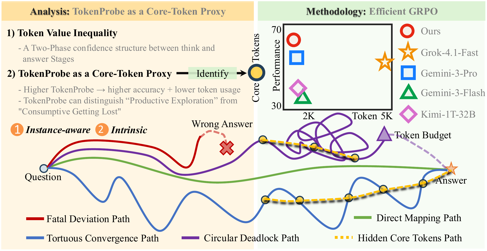
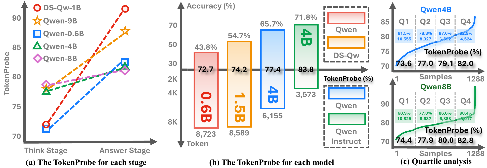
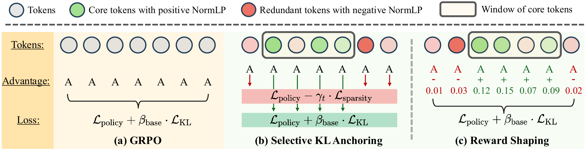
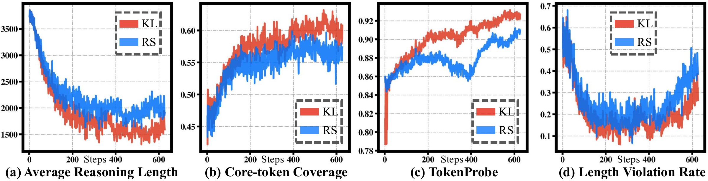
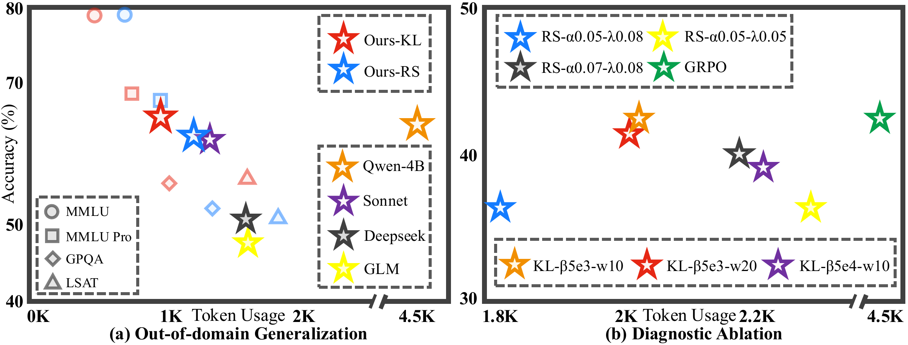

Token Value Inequality
\blacktriangleright A two-phase confidence structure between think and answer stages.
Chain-of-Thought reasoning has enabled large language models to achieve substantial performance gains on complex tasks. However, these gains come at the cost of dramatically increased token consumption. This raises a fundamental question: is every token in the reasoning trace equally valuable? We present a diagnostic and optimization framework grounded in a key empirical finding: the value of tokens within a CoT reasoning sequence is highly non-uniform, and this non-uniformity can be effectively characterized by token-level log probability signals. We show that normalized log probability helps distinguish core tokens, which carry structural and decisive reasoning content, from redundant tokens, which are exploratory, low-confidence filler that contributes less directly to the final answer. Building on these findings, we formulate the TokenProbe framework around two empirical findings and one claim: findings identify token value inequality first and then establish TokenProbe as a core-token proxy, and the claim introduces an efficient GRPO objective positing that selectively compressing redundant tokens can yield Pareto improvements in the accuracy–token efficiency space. Empirically, our method preserves reasoning quality while reducing the token usage by 76% of the baseline. Under matched reasoning-length budgets, we show that it can even outperform strong flagship baselines like Gemini-3.1-Pro.
The training objective of an autoregressive language model [16, 17, 18] is to maximise the log-likelihood of the observed token sequence, \mathcal{L} = \sum_{t=1}^{T} \log p_\theta\!\bigl(s_t \mid s_{<t},\, x\bigr). Under this objective, when the model faces a complex reasoning problem, directly predicting the answer yields a high-entropy conditional distribution, the model is uncertain about the answer, and p(y\mid x) spreads across many candidates. Chain-of-Thought (CoT) reasoning [19, 20] addresses this by introducing intermediate reasoning steps z that decompose the prediction as p_\theta(y\mid x) = \sum_{z} p_\theta(z\mid x) \, p_\theta(y\mid x,z). Each reasoning step z_i narrows the solution space conditioned on its predecessors, substantially improving accuracy on multi-step reasoning tasks by explicitly introducing latent variables that reduce the dimensionality of the prediction problem [21, 22, 23].
However, the introduction of latent variables and reasoning steps brings the extreme token usage spurge along the performance gain [24, 25, 26, 10, 27] (i.e., enabling CoT on Qwen-4B adds 24.1% in accuracy at a cost of 4.5\times more tokens). As shown in the Fig. 1, CoT reasoning currently exhibits several characteristic patterns. The green curve represents the ideal reasoning trajectory, where the model moves from the question to the correct answer through a relatively direct semantic mapping. In contrast, the red curve illustrates a fatal deviation path, in which one decisive wrong directional exploration drifts toward an incorrect conclusion. The purple curve depicts a circular deadlock path, where the model expends substantial token budget while becoming trapped in repetitive or unproductive loops [28]. The blue curve corresponds to a tortuous convergence path, where the model eventually reaches the correct answer, but only after a long and unnecessarily oscillatory reasoning process. This raises a central question: Are these tokens uniformly valuable, especially along the purple curve and the blue curve? If not, it means a substantial fraction of the extra tokens is low-value exploratory redundancy, there exists the possibility of a Pareto improvement: preserving core reasoning content while drastically cutting redundant tokens, thereby greatly reducing the cost of model using since all models are token-based billing under the next token prediction paradigm [29].

Answering this question requires a suitable token-granularity diagnostic signal. Concretely, such a signal would arise as an inference-native by-product of generation, without relying on additional reward models [5, 30, 31] or human annotation, thus avoiding post-processing overhead and extra forward passes. It would also preferably offer finer granularity, allowing more flexible intra-sequence discrimination than sequence-level or turn-level scores. Motivated by this, we naturally turn to the autoregressive model’s own output, token-level log probability [32, 33, 34]. It is a direct product of the training objective, already present at every decoding step, and its relative variation within a sequence encodes precisely the model's local confidence dynamics.
Building on this raw token-level signal, we introduce two derived quantities that play complementary roles. The Normalized Log Probability (\normlp{}) highlights candidate decisive tokens within a response, while the TokenProbe aggregates this signal into a scalar that tracks the model's accuracy and token usage. They jointly drive our efficient GRPO (see §3) and explain why it yields Pareto improvements. Two properties make this lever sharp. ① Instance-aware. By normalization, \normlp{} is a relative signal within each response. It identifies which tokens have confidence above the response mean (positive \normlp{}) and which fall below (negative \normlp{}), therefore distinguishing the core tokens flexibly and dynamically (see Tab. 1), rather than relying on absolute magnitudes. Building on this contrastive signal, we further define the TokenProbe of a response as the ratio of its tokens with positive \normlp{}.
② Intrinsic. For a given model, the TokenProbe is relatively stable and robust to hyperparameter variations (see §S2). It therefore reflects the model's intrinsic degree of certainty and training characteristics without additional processing or annotations, and in turn helps evaluate the model's reasoning ability (see Fig. 2), including both its accuracy and its token usage.
The remainder of the paper is structured as follows. In §2, we conduct a systematic probing analysis of token-level log probability, formally introducing the \normlp{} and TokenProbe signals. Through two key findings, we establish that CoT reasoning exhibits a two-phase confidence structure (Finding 1) and that TokenProbe is consistently associated with both reasoning accuracy and token usage (Finding 2), laying the empirical foundation for our approach. Building on these insights, §3 presents our efficient GRPO as a Claim, which translates the NormLP-based analysis into practice through two complementary mechanisms, Selective KL Anchoring, which focuses regularization on core tokens identified by NormLP, and Reward Shaping, which incentivizes dense and concise reasoning trajectories. §4 reports comprehensive experiments across multiple benchmarks and model families, showing a consistent trend toward Pareto improvement while maintaining accuracy and substantially reducing token usage. We close in §4.3 with a detailed discussion of training dynamics, out-of-domain efficiency transfer, and diagnostic ablation.
Given a response consisting of tokens \{s_1,\dots,s_T\} with per-token log probabilities \ell_t = \log p_\theta(s_t\mid s_{<t}), the normalized log probability of token t is
We define TokenProbe as the ratio of tokens whose normalized log probability is positive, where \mathbb{I}[\cdot] is the indicator function.
Leveraging TokenProbe, we study five models of different scales across four reasoning benchmarks, AIME, MATH [38, 30], AMC, and Olympiad-Bench [39], under varied hyperparameter settings (see more in §S2). We organize the analysis in a coarse-to-fine manner and formulate two central findings supported by the resulting empirical evidence.

To understand token contributions, we begin by examining the output structure of common reasoning models. The output of a thinking-enabled model [35, 36] is naturally segmented into two phases: Think phase, spanning the content between <think> and </think>, contains the intermediate reasoning process; and Answer phase, occurring after </think>, contains the final answer output.
As shown in Fig. 2(a), the log-probability distributions of the two phases exhibit a pronounced duality: Answer-phase TokenProbe is systematically 3%–20% higher than Think-phase TokenProbe. This reveals the underlying structure of CoT reasoning: the Think phase is a high-cost search process (i.e., the model is exploring solution paths), while the Answer phase is a low-cost decision output (i.e., the model has formed a definite conclusion) [21, 23]. The “value” of reasoning is not uniformly distributed across every token of the Think phase. Part of it serves genuine reasoning functions, while the rest is exploratory noise.
Building on the finding of token value inequality, we then conduct a finer-grained analysis of TokenProbe to examine its underlying characteristics. More specifically, we define reasoning quality as the ability to achieve higher accuracy under a relatively low yet still reasonable token budget [37, 24]. Under this view, high-quality reasoning is not merely shorter reasoning, but reasoning that avoids unnecessary detours and self-corrections while preserving performance.
As shown in Fig. 2(b), our results suggest that TokenProbe serves as an effective proxy for this notion of reasoning quality. Across four representative models of different scales, we observe a clear pattern: as TokenProbe increases, accuracy consistently rises, while token usage consistently falls. This indicates that higher TokenProbe is associated not with premature truncation, but with more efficient reasoning trajectories that remove unnecessary repeated corrections. Moreover, this pattern is not confined to these four cases. Across all experimental settings we analyze in §S2, the Pearson correlation between TokenProbe and token usage is consistently negative, whereas the correlation between TokenProbe and accuracy is consistently positive, further supporting that TokenProbe is a useful empirical indicator of both reasoning effectiveness and token efficiency [32].
As shown in Fig. 2(c), we do a further analysis on Qwen-4B and Qwen-8B. Accuracy increases by 31.4% from the lowest to the highest quartile, while token usage drops by 57%. This pattern replicates faithfully on other model scales (see more in §S2).
While Findings 1–2 characterize reasoning quality at the phase and response level, identifying which specific tokens within a trace are productive requires finer-grained analysis. We therefore drill down to the individual token level [6, 32], demonstrating how \normlp{} provides fine-grained semantic discrimination within a reasoning trace (see the complete case in §S2). This finding carries the most direct practical implications. As shown in Tab. 1, we perform a detailed analysis of the commonly used token “Wait” at different positions within a single reasoning trace. We find that early occurrences often reflect productive self-correction, whereas late occurrences tend to be wasteful. This distinction is reflected by positive versus negative \normlp{}, thereby providing an empirical foundation for identifying core tokens in the subsequent efficient GRPO framework.
| Position | NormLP | Semantic role | Impact |
|---|---|---|---|
| (early) | +0.47 | First verification discovers misinterpretation | Productive |
| (mid-late) | −4.13 | Re-questions already-confirmed step | Wasteful (+700 tokens) |
We complement the analysis with a fully token-level visualisation of the Qwen-4B reasoning trace summarised in Tab. Wait-token analysis. Each token's background is shaded by its \normlp{}. Green for above-mean (positive) confidence, red for below-mean (negative) confidence, with intensity log-scaled against the global max-abs across our five case studies. Intensities below a 3\% floor are left uncoloured to suppress imperceptible tints. The 17 occurrences of “Wait''/“wait'' in this trace are additionally framed with a black border so they can be located at a glance, and the small grey number at the start of each physical line (1 to 80 across the three parts) provides a continuous line counter for cross-referencing.
The operation @ is defined as \frac{m}{n}@\frac{p}{q} = (m)(p)\left(\frac{q}{n}\right) for simplified fractions \frac{p}{q}. What is the simplified value of \frac{7}{30}@\frac{10}{21}? Let's think step by step and output the final answer within \boxed{}.
Every visible fragment is matched to its original token, with the original NormLP and logprob.
Hover or focus for a preview; click or press Enter to select. Left / Right arrows move between tokens. Source line numbers are retained while text wraps to fit your screen.
**Final Answer** block on line 38 (Fig. Part 3/3).The early “Wait” (Token [54]) sits in a green-tinted neighbourhood, while the late “Wait” (Token [1273]) is embedded in a continuous run of red tokens. A single low-\normlp{} “Wait” tends to drag a long tail of low-\normlp{} downstream tokens with it. This is exactly the asymmetry that motivates TokenProbe. The response-level positive-token ratio captures the productive-vs.-wasteful split in a single scalar, without requiring any token-by-token labelling.

Findings 1 and 2 jointly motivate a crucial claim: CoT reasoning contains a large volume of redundant tokens that are identifiable by \normlp{} signals, and these redundant tokens are directly associated with low accuracy and high token consumption. Therefore, if training can guide a model to: (a) preserve the reasoning density of core tokens, and (b) compress or eliminate redundant tokens, then it is possible to substantially reduce the token budget of CoT reasoning without significant loss in final-answer accuracy, achieving a Pareto efficiency improvement.
Based on the analysis above, we build upon standard GRPO [1, 2, 3], which maximises the per-token objective
To avoid overly sparse rewards and preserve semantic coherence, without introducing additional annotation effort at the turn level, we identify core tokens through a mathematically motivated window selection strategy (see more discussion in §S3.2). The core window is selected based on \normlp{}, with the intuition that tokens in high-density regions are more likely to correspond to essential reasoning steps [6, 7]. Specifically, given the normalized scores \{\normlp{}_t\}_{t=1}^T, we apply a sliding window of size W and compute the cumulative score for each window as s_i^{(W)} = \sum_{t=i}^{i+W-1} \normlp{}_t. Finally, we greedily select the highest-scoring non-overlapping windows and define the corresponding token positions as core tokens (see §S3.1), yielding a binary core mask CT_t \in \{0,1\}, where CT_t = 1 indicates a core token and CT_t = 0 a redundant token.
As illustrated in Fig. 3(b), KL keeps the policy term of Eq. 3 intact and makes only the regularizer token-adaptive:
Core tokens (CT_t = 1). We keep the vanilla regularizer (i.e., \beta_t = \beta_{\text{base}},\, \gamma_t = 0), anchoring optimisation on reasoning-essential tokens without adding any sparsity pressure. Over-budget redundant tokens (CT_t = 0,\, T > L_{\text{limit}}). We remove the KL constraint (\beta_t = 0) and inject an overflow-proportional sparsity penalty \gamma_t = \lambda_{\text{decay}} \cdot (T - L_{\text{limit}}) / T, suppressing further redundant generation once a trace has already exceeded the budget. Within-budget redundant tokens (CT_t = 0,\, T \leq L_{\text{limit}}). We fall back to the stable setting (\beta_t = \beta_{\text{base}},\, \gamma_t = 0), tolerating moderate redundancy rather than prematurely suppressing it.
As illustrated in Fig. 3(c), RS keeps the regularizer of Eq. 3 intact and instead reshapes the advantage inside the policy term.
Choose a window size W and a number of windows K, then click Preview. Following the appendix pseudocode, each window is scored by its sum of NormLP; the highest-scoring window is selected first, overlapping candidates are excluded, and selection repeats up to K times. The outlines show the core regions used by Reward Shaping on this correct response.
The same Full token-level reasoning trace is shown here without color. Selection uses all 3,307 original tokens, including whitespace and line breaks. Windows are listed in selection order; only Preview updates the selection.

To understand how our objectives compress reasoning, we track four diagnostic signals along RL training on Qwen-4B (Fig. 4). (a) Average reasoning length. This signal is the mean number of response tokens generated per rollout, our most direct proxy for training-time compression. As shown in Fig. 4(a), both KL and RS rapidly pull the response length from roughly 3.7K tokens at the start of RL to a much shorter regime [10, 11]. KL compresses more aggressively, stabilising at 1.6 to 1.8K tokens, whereas RS remains longer at 1.9 to 2.0K tokens. This indicates that both objectives successfully suppress excessive deliberation, but with different strength. KL enforces a hard sparsity pressure, while RS trades compression for a softer reward-shaped adjustment, which is consistent with the results shown in Tab. 2. (b) Core-token coverage. This signal is the fraction of generated tokens covered by TokenProbe-selected core windows (i.e., the number of selected windows \times window size, normalised by the average response length), and therefore measures how densely the remaining tokens carry useful signal. Fig. 4(b) shows that coverage rises steadily under both objectives, meaning the surviving tokens become progressively denser in TokenProbe-selected content. KL reaches a higher final coverage than RS, suggesting that KL removes redundant context more sharply and leaves a larger fraction of the response occupied by high-value windows. RS follows the same upward trend but stays lower, consistent with its longer generations, improving the density of useful tokens while retaining more non-core connective or exploratory material. (c) TokenProbe. As shown in Fig. 4(c), both methods trace a clear upward trajectory. KL rises from \sim0.84 to above 0.92, while RS increases more smoothly and eventually approaches the same regime.
The steeper KL curve is consistent with a sharper compression effect, whereas the smoother RS curve reflects reward-shaped improvement without fully eliminating exploratory material. (d) Length violation rate. This signal is the fraction of valid responses whose length exceeds the dynamic TokenProbe budget (i.e., the selected core length multiplied by the current curriculum scale), diagnosing how well the policy stays within a progressively tightened budget. Fig. 4(d) shows that the violation rate first drops substantially as the model learns to respect the TokenProbe-derived budget, then rebounds later in training, especially for RS. This rebound is expected because the budget is progressively tightened through the curriculum scale while the policy is still adapting. See more in §S6.

To assess whether the token-efficiency gains transfer beyond mathematics, we evaluate the Qwen-4B base model, RS, and KL on four additional benchmarks spanning scientific, legal, and multi-disciplinary reasoning, including MMLU [12], MMLU-Pro [13], LSAT [14], and GPQA [15]. As shown in Fig. 5, both objectives substantially compress length relative to the base model (i.e., 4{,}401 tokens), with RS reduced to 1{,}179 tokens (3.7\times) and KL to 935 tokens (4.7\times). Crucially, this compression is not paid for in accuracy. RS maintains a competitive average of 57.74 vs. 59.62 (i.e., -1.9\%), while KL actually improves over the base model to 60.61 (i.e., +1.0\%) despite using far fewer tokens. The effect is most pronounced when compared with state-of-the-art closed-source models such as Sonnet 4.6, where our method achieves higher accuracy while using relatively same tokens (\sim150\times cheaper in Tab. API pricing). This confirms that the efficiency generalize robustly to diverse reasoning domains (see more discussions in §S4.2).
We ablate the two hyperparameter groups of our method, the coefficients (\beta, w) in KL and the coefficients (\alpha, \lambda) in RS, reporting average token count and accuracy on the four math benchmarks. The GRPO baseline reaches 42.3\% at 4{,}461 tokens on average and serves as the reference point throughout. Coefficients (\alpha, \lambda) in RS. A key design choice is the balance between the core-token reward \alpha and the redundancy penalty \lambda, which governs how aggressively redundant tokens are suppressed without starving the model of informative-token credit. Holding \alpha{=}0.05, raising \lambda from 0.05 to 0.08 reduces token usage by 21\% (i.e., 2{,}291 \to 1{,}806) at essentially unchanged accuracy (i.e., 36.1 vs. 36.3), confirming that a stronger length penalty compresses responses without harming correctness. Further raising \alpha to 0.07 at \lambda{=}0.08 improves accuracy to 39.9\% at 2{,}179 tokens, indicating that a larger core-token reward encourages more informative reasoning rather than merely shorter traces. Coefficients (\beta) and window size (w) in KL. The shaping coefficient \beta controls the magnitude of the per-token advantage correction, while the window size w controls the neighbourhood over which TokenProbe density is averaged. Under a matched window, \beta{=}5\times 10^{-3} outperforms \beta{=}5\times 10^{-4} (i.e., 42.3 vs. 39.0 at \approx2,200 tokens), indicating that a sufficiently strong shaping signal is necessary for the token-level guidance to affect policy updates. Comparing window sizes at \beta{=}5\times 10^{-3}, w{=}10 yields 42.3\% at 2{,}023 tokens vs. 41.4\% at 2{,}008 tokens for w{=}20, a marginal difference that suggests the method is insensitive to moderate window-size variation.
In-domain reasoning accuracy · Estimated output cost per 1,000 responses (USD)
| Pareto |
|---|
† Serving-price estimates: Qwen3-4B — $0.10 / 1M output tokens; Qwen3-8B — $0.13 / 1M output tokens (using the supplied qwen/qwen3.5-9b rate as a pricing reference). Both are conservative, high-side estimates; personal self-hosted deployment may achieve lower effective usage costs.
Cost is estimated from generated completion tokens, including billable reasoning tokens where present. At the default unit:
Cost per 1,000 responses = mean output tokens × output price per million tokens ÷ 1,000
Only output-token cost is included; input tokens, caching, tool calls, and hosting overhead are excluded. API prices retain the September 24, 2026 snapshot used by the paper's plotting script. Qwen3-4B uses $0.10 / million output tokens; Qwen3-8B uses $0.13 / million output tokens, based on the user-supplied qwen/qwen3.5-9b reference price. The latter is a pricing proxy, not a measured Qwen3-8B serving price. Both are conservative, high-side estimates; personal self-hosted deployment may achieve lower effective usage costs. All Qwen3-4B and Qwen3-8B variants use their respective estimate.
Accuracy values are the reported in-domain averages from the paper and its existing plotting script, covering AIME-2025, MATH-500, AMC, and OlympiadBench. Reported averages are preserved, rather than recomputed from rounded per-benchmark values.
Each point is one model configuration. Higher means more accurate; farther left means lower estimated output cost. The dotted Pareto line connects configurations for which no other visible model is both at least as accurate and at least as inexpensive, with one strict improvement.
The pale green quadrant marks above-median accuracy and below-median cost among the currently visible models. It is a visual guide, not a statistical significance claim. The frontier and quadrant update with your selection and filters. Our trained variants have a green halo.
All reported model configurations from the main results, expanded API comparison, and token-budget tables. Reported averages are preserved. Output prices and estimated costs are included.
AIME-2025 · MATH-500 · AMC · OlympiadBench
| Model / configuration | Average | AIME-2025 | MATH-500 | AMC | OlympiadBench | Output cost (USD) | ||||||
|---|---|---|---|---|---|---|---|---|---|---|---|---|
| #Tk. ↓ | Acc. (%) ↑ | #Tk. ↓ | Acc. (%) ↑ | #Tk. ↓ | Acc. (%) ↑ | #Tk. ↓ | Acc. (%) ↑ | #Tk. ↓ | Acc. (%) ↑ | Price / 1M | Cost / 1K | |
#Tk. = mean generated completion tokens per response; Acc. = reported accuracy (%). Rows are grouped as in the paper. Different budgets and reasoning settings are separate configurations; Price / 1M = USD per million output tokens; Cost / 1K responses = domain-specific average #Tk. × price / 1,000. — means unreported or unavailable, never zero. Click a plotted model’s row to return to its highlighted point above; a hidden point is revealed automatically. Rows without a cost estimate have no figure point.
MMLU · MMLU-Pro · LSAT · GPQA
| Model / configuration | Average | MMLU | MMLU-Pro | LSAT | GPQA | Output cost (USD) | ||||||
|---|---|---|---|---|---|---|---|---|---|---|---|---|
| #Tk. ↓ | Acc. (%) ↑ | #Tk. ↓ | Acc. (%) ↑ | #Tk. ↓ | Acc. (%) ↑ | #Tk. ↓ | Acc. (%) ↑ | #Tk. ↓ | Acc. (%) ↑ | Price / 1M | Cost / 1K | |
GPT-5.6 Luna, Sol (including every reasoning-effort variant), and Terra are excluded from this table and its export because their MMLU, MMLU-Pro, LSAT, and GPQA evaluation data are unreliable. Other configurations with unreported OOD measurements remain listed with —. Click a plotted model’s row to highlight the same configuration in the figure above, which uses In-domain accuracy and cost. In-domain and Out-of-domain measurements are never combined.
To complement the quantitative comparisons in the preceding sections, we present five paired case studies drawn from the evaluation outputs of our KL-shaped 8B checkpoint and the matched unshaped 8B base, run on identical prompts under an 8K token budget. We surface two failure modes of the base model that the KL-shaped model consistently avoids. (A) exhausting the 8K budget without producing an extractable answer, and (B) reaching the same correct answer but spending 3 to 6 \times more tokens. For readability each case is laid out on its own page. The green box reports metadata (prompt, ground truth, per-model token counts and correctness), the two gray boxes contain head to tail excerpts of the two responses, and the body text below them analyses what each model did differently.
Find the number of ordered pairs (x,y), where both x and y are integers between -100 and 100, inclusive, such that 12x^{2}-xy-6y^{2}=0.
Let's think step by step and output the final answer within \boxed{}.
<think>
Okay, so I need to find the number of ordered pairs (x, y) where x and y are integers between -100 and 100 inclusive, and they satisfy the equation 12x{}^{2} - xy - 6y{}^{2} = 0. Hmm, let me start by trying to factor the equation or maybe solve for one variable in terms of the other.
First, let me rewrite the equation: 12x{}^{2} - xy - 6y{}^{2} = 0. Maybe I can treat this as a quadratic in x or y. Let me try treating it as a quadratic in x. So, 12x{}^{2} - yx - 6y{}^{2} = 0. Using the quadratic formula for x:
x = [y ± √(y{}^{2} + 4*12*6y{}^{2})] / (2*12)
Simplify the discriminant: y{}^{2} + 288y{}^{2} = 289y{}^{2}. So sqrt(289y{}^{2}) is 17|y|. Therefore,
x = [y ± 17|y|] / 24.
Hmm, since we are dealing with integers, perhaps we can consider cases based on the sign of y.
Case 1: y ≥ 0. Then |y| = y, so:
x = [y ± 17y]/24.
So two possibilities:
x = (y + 17y)/24 = 18y/24 = 3y/4,
or x = (y - 17y)/24 = (-16y)/24 = -2y/3.
Case 2: y < 0. Then |y| = -y, so:
x = [y ± 17*(-y)] /24.
Which would be:
x = [y ∓ 17y]/24.
So two possibilities:
x = [y - 17y]/24 = (-16y)/24 = -2y/3,
or x = [y + 17y]/24 = 18y/24 = 3y/4.
[... truncated for brevity ...]
---
### Step 2: Adjusting for overlap
The only overlapping solution is $(0, 0)$, which appears in both families. Hence, we subtract 1 to avoid double-counting.
---
### Final Count
$$
\text{Total solutions} = 51 + 67 - 1 = \boxed{117}
$$<think>
Okay, so I need to find the number of ordered pairs (x, y) where both x and y are integers between -100 and 100 inclusive, and they satisfy the equation 12x{}^{2} - xy - 6y{}^{2} = 0. Let me start by trying to understand the equation better.
First, maybe I can factor the equation or rearrange it to make it easier to handle. Let me write down the equation again:
12x{}^{2} - xy - 6y{}^{2} = 0.
Hmm, this looks like a quadratic in terms of x or y. Maybe I can treat it as a quadratic equation in x and solve for x in terms of y, or vice versa. Let me try that.
Let me consider this as a quadratic equation in x. So, rearranged:
12x{}^{2} - xy - 6y{}^{2} = 0.
So, in terms of x, this is:
12x{}^{2} - yx - 6y{}^{2} = 0.
Using the quadratic formula, x = [y ± √(y{}^{2} + 4*12*6y{}^{2})] / (2*12). Let me compute the discriminant:
Discriminant D = y{}^{2} + 4*12*6y{}^{2} = y{}^{2} + 288y{}^{2} = 289y{}^{2}.
[... truncated for brevity ...]
2*(-33) = -66, 2*33 = 66). y ranges from -99 to 99 (since -3m for m from -33 to 33: when m = -33, y = 99; when m = 33, y = -99). Therefore, y is within -100 to 100. Therefore, 67 values. Correct.
Therefore, 51 + 67 - 1 = 117. Therefore, answer is 11This AIME problem asks for the number of integer pairs (x,y) with both coordinates in [-100,100] that satisfy 12x^{2}-xy-6y^{2}=0. The clean way is to factor the quadratic form to obtain the two ray-families (3k,4k) and (-2m,3m), count lattice points on each family, and subtract the single overlap at the origin — which is exactly what the KL-shaped model does in 1,897 tokens.
The 8B base spends its budget very differently. It correctly identifies the same factorisation in the first few hundred tokens, but then re-opens the analysis: it splits cases on the sign of y, repeatedly re-derives the discriminant, double-checks the absolute-value handling, and verifies the lattice counts via several redundant parametrisations. The trace then loops back to re-examine boundary values for k and m, never returning to a final closed form. By the time it does state “Therefore, 51+67-1=117'' the 8K-token cap has already been hit; the answer is cut mid-token (“answer is 11'') and the extractor returns EXTRACTION_FAILED.
Qualitatively this is the prototypical truncation failure of the unshaped base on AIME-difficulty problems: the right answer is reachable, the model can even recite it, but the verbose verification habits inflate the trace beyond the budget. The KL-shaped model writes the same proof skeleton with no redundant verification cycles and finishes well inside the budget, which is exactly the behaviour the KL-length shaping was designed to encourage.
Find all functions f: \mathbb{Q} \rightarrow \mathbb{Q} such that the equation holds for all rational numbers x and y.
Here, \mathbb{Q} denotes the set of rational numbers. Let's think step by step and output the final answer within \boxed{}.
<think>
Okay, so I need to find all functions f from the rational numbers to the rational numbers that satisfy the equation f(xf(x) + y) = f(y) + x{}^{2} for all rational x and y. Hmm, functional equations can be tricky, but let me try to break it down step by step.
First, maybe I can plug in some specific values for x or y to simplify the equation and get some information about f.
Let me start by trying x = 0. If I set x = 0, the equation becomes f(0*f(0) + y) = f(y) + 0{}^{2}, which simplifies to f(y) = f(y) + 0. So that just gives f(y) = f(y), which is always true. So that doesn't give me new information. Hmm.
What if I set y = 0? Then the original equation becomes f(xf(x) + 0) = f(0) + x{}^{2}, so f(xf(x)) = f(0) + x{}^{2}. That seems useful. So f(xf(x)) = f(0) + x{}^{2}. Maybe I can use this later.
Another idea: perhaps assume that f is a polynomial function. Sometimes functional equations have polynomial solutions. Let me suppose that f is a polynomial. Let's assume f(x) is a polynomial with rational coefficients.
[... truncated for brevity ...]
- For $ f(x) = -x $, the left-hand side becomes $ x^2 - y $, and the right-hand side is $ -y + x^2 $, which also matches.
---
### Final Answer
$$
\boxed{f(x) = x} \quad \text{and} \quad \boxed{f(x) = -x}
$$<think>
Okay, so I need to find all functions $ f: \mathbb{Q} \rightarrow \mathbb{Q} $ that satisfy the equation $ f(x f(x) + y) = f(y) + x^2 $ for all rational numbers $ x $ and $ y $. Hmm, functional equations can be tricky, but let me take it step by step.
First, maybe I should try plugging in some specific values for $ x $ or $ y $ to see if I can find some properties of $ f $.
Let me start by setting $ y = 0 $. Then the equation becomes:
$ f(x f(x) + 0) = f(0) + x^2 $
Which simplifies to:
$ f(x f(x)) = f(0) + x^2 $
Hmm, interesting. So this relates the value of the function at $ x f(x) $ to $ f(0) $ and $ x^2 $. Maybe I can use this later.
What if I set $ x = 0 $? Let me try that. Then the original equation becomes:
$ f(0 \cdot f(0) + y) = f(y) + 0^2 $
Simplifying:
$ f(y) = f(y) + 0 $
[... truncated for brevity ...]
Alternatively, set $ y = 0 $: $ f(c) = f(0) + 1 $, which is also known.
Now, let me try to find $ f $ at $ x = -1 $. Let me denote $ d = f(-1) $. Let me see if I can relate this to other values.
From the original equation, set $ x = -1 $, $ y =The Olympiad Bench problem here is a classical Cauchy-style functional equation: find all f:\mathbb{Q}\to\mathbb{Q} with f(xf(x)+y)=f(y)+x^{2}. The expected ground truth is the pair \{f(x)=x,\ f(x)=-x\}, recovered by assuming a polynomial form, balancing degrees, and reading off a^{2}=1.
Our KL-shaped model executes this argument compactly in 1,667 tokens: it tries x=0 and y=0 to extract the relation f(xf(x))=f(0)+x^{2}, assumes f is linear of degree 1, substitutes f(x)=ax+b, and arrives at a^{2}=1, b=0. It then verifies both branches against the original equation. The final boxed answer reports f(x)=-x (and earlier in the trace also f(x)=x), so a strict matcher only credits one branch; this still counts as a qualitative truncation win because the base model produces no extractable answer at all on the same prompt.
The 8B base, in contrast, exhausts its 8K budget on a long substitution loop. It tries y=0, x=0, x=y=0, y=-c, y=0 again with c=f(0), and various ad-hoc substitutions trying to force injectivity or surjectivity — but never commits to the polynomial-degree argument. The trace is cut mid-substitution at x=-1, so the extractor again returns failure. The contrast illustrates a second failure mode of the base: not just verbose, but also strategically directionless under tight budgets, repeatedly probing the same special values rather than escalating to a structural ansatz.
The least common multiple of a positive integer n and 18 is 180, and the greatest common divisor of n and 45 is 15. What is the sum of the digits of n? Let's think step by step and output the final answer within \boxed{}.
<think>
Okay, so I need to find the sum of the digits of n, given two conditions: the least common multiple of n and 18 is 180, and the greatest common divisor of n and 45 is 15. Hmm, let me start by recalling some number theory concepts.
First, LCM and GCD relationships. I remember that for any two numbers a and b, LCM(a,b) * GCD(a,b) = a*b. Maybe that will come in handy.
Given that LCM(n, 18) = 180. So, LCM(n, 18) = 180. Also, GCD(n, 45) = 15.
Let me start with the LCM condition. Let's factorize the numbers involved. 18 is 2 * 3^2, and 180 is 2^2 * 3^2 * 5.
Since LCM(n, 18) = 180, then n must be a divisor of 180, right? Because the LCM of n and 18 is 180, so n has to divide 180. Also, the LCM takes the highest powers of primes present in either number.
So, let's think about the prime factors of n. Since LCM(n, 18) is 180, which has primes 2, 3, 5.
18 has 2^1, 3^2. So, for the LCM to have 2^2, either n has 2^2 or 18 has it, but 18 only has 2^1, so n must have 2^2. Similarly, for 3^2, since 18 has 3^2, so maybe n doesn't need to have 3^2. But for the 5, since 18 doesn't have 5, then n must have 5^1.
Therefore, n must have factors 2^2, 5^1, and possibly 3^something. But since LCM(n, 18) is 180, which has 3^2, and 18 has 3^2, so n can have 3^0, 3^1, or 3^2. But since GCD(n, 45) is 15. Let's check the GCD condition.
45 is 3^2 * 5. GCD(n, 45) = 15 = 3 * 5. Therefore, n must have 3^1 and 5^1, but not higher powers of 3 or 5. Because if n had 3^2, then GCD(n,45) would be 3^2 *5 = 45, which is not 15. Similarly, if n had 5^2, then GCD would have 5^1 (since 45 has 5^1), so that's okay. Wait, but GCD(n,45) is 15, which is 3*5. So, n must have 3^1 and 5^1, but not higher powers of 3 or 5. Therefore, n can't have 3^2 or 5^2.
Therefore, putting this together, n has 2^2, 3^1, 5^1. Therefore, n = 4 * 3 * 5 = 60. Let me check if this satisfies the conditions.
Check LCM(60, 18). 60 is 2^2 * 3 * 5, 18 is 2 * 3^2. LCM would take max exponents: 2^2, 3^2, 5^1. Which is 4 * 9 *5 = 180. Yes, that's correct.
Check GCD(60,45). 60 is 2^2 *3 *5, 45 is 3^2 *5. GCD is min exponents: 3^1 *5^1 = 15. Perfect. So n is 60.
Therefore, the sum of the digits of n is 6 + 0 = \boxed{6}.
</think>
To solve the problem, we analyze the two given conditions:
1. **LCM(n, 18) = 180**
2. **GCD(n, 45) = 15**
---
### Step 1: Factorization and Prime Components
- $ 18 = 2 \times 3^2 $
- $ 180 = 2^2 \times 3^2 \times 5 $
- $ 45 = 3^2 \times 5 $
---
### Step 2: Use LCM Condition
Since LCM(n, 18) = 180, n must have the prime factors that make the LCM equal to 180. From this, we deduce:
- n must include $ 2^2 $ (to match the LCM's $ 2^2 $)
- n must include $ 5 $ (since 18 doesn't have 5)
- n can have up to $ 3^2 $, but not more than that (to keep LCM at $ 3^2 $)
So, n must include $ 2^2 \times 5 \times 3 $
---
### Step 3: Use GCD Condition
Given GCD(n, 45) = 15, and 45 = $ 3^2 \times 5 $, we deduce:
- n must have $ 3 $ and $ 5 $, but **not** $ 3^2 $ or $ 5^2 $
Therefore, n must be $ 2^2 \times 3 \times 5 = 4 \times 3 \times 5 = 60 $
---
### Step 4: Sum of Digits
The digits of 60 are 6 and 0. Their sum is:
$$
\boxed{6}
$$<think>
Okay, so I need to find a positive integer n such that the least common multiple of n and 18 is 180, and the greatest common divisor of n and 45 is 15. Then, I have to find the sum of the digits of n. Let me try to break this down step by step.
First, let me recall what least common multiple (LCM) and greatest common divisor (GCD) mean. The LCM of two numbers is the smallest number that both numbers divide into, and the GCD is the largest number that divides both numbers. Also, there's a relationship between LCM and GCD: for any two positive integers a and b, LCM(a, b) * GCD(a, b) = a * b. Maybe that will come in handy here.
So, the problem gives me two conditions:
1. LCM(n, 18) = 180
2. GCD(n, 45) = 15
I need to find n that satisfies both these conditions. Let me tackle them one by one.
[... truncated for brevity ...]
So $ n = 60 $ satisfies both conditions.
---
### Step 5: Compute the Sum of the Digits of $ n $
The digits of $ n = 60 $ are **6** and **0**.
$$
\text{Sum of digits} = 6 + 0 = \boxed{6}
$$
---
### Final Answer
$$
\boxed{6}
$$On this AMC number-theory problem (find n with \mathrm{lcm}(n,18)=180 and \gcd(n,45)=15, then sum the digits of n), both models reach the correct answer of 6. The arithmetic chain is short: factor 18,45,180 into primes, read the LCM constraint as n contributing the missing 2^{2} and a factor of 5, read the GCD constraint as n contributing exactly 3^{1}\cdot 5^{1}, conclude n=2^{2}\cdot 3\cdot 5=60, sum the digits.
The KL-shaped model executes that chain end-to-end in 1,339 tokens with one explicit verification at the end. The 8B base needs 7,434 tokens to do the same work — a 5.5\times inflation. Inspecting its trace, the base model: (i) recomputes the same prime factorisations multiple times, (ii) re-derives the LCM/GCD constraints from the relation \mathrm{lcm}\cdot\gcd=ab even though it then also derives them combinatorially from prime exponents, (iii) explores hypothetical alternative forms of n that the constraints already rule out, and (iv) rewrites the verification step in three different fractional and prime-factor forms.
None of these extra detours improve the final answer; they purely consume budget. This is the canonical Category-B pattern: the base model is fluent enough to find the correct path quickly but lacks a stopping discipline once it is found. The KL-shaping reward directly penalises this redundancy, and the resulting model produces a single tight chain of reasoning instead.
Simplify: \frac{\sqrt{2.5^2-0.7^2}}{2.7-2.5}. Let's think step by step and output the final answer within \boxed{}.
<think>
Okay, so I need to simplify this expression: the square root of (2.5 squared minus 0.7 squared) divided by (2.7 minus 2.5). Let me write that down to visualize it better.
First, let me handle the numerator: √(2.5{}^{2} - 0.7{}^{2}). Hmm, maybe I can simplify the expression inside the square root first. Remember, a{}^{2} - b{}^{2} is (a - b)(a + b). Let me try that.
So, 2.5{}^{2} - 0.7{}^{2} would be (2.5 - 0.7)(2.5 + 0.7). Let me calculate those values.
2.5 - 0.7 is 1.8, and 2.5 + 0.7 is 3.2. Therefore, the numerator becomes √(1.8 * 3.2). Let me compute 1.8 * 3.2.
1.8 * 3.2: Well, 1.8*3 = 5.4 and 1.8*0.2 = 0.36, so total is 5.4 + 0.36 = 5.76. Therefore, the numerator is √5.76.
What's the square root of 5.76? Let me think. 2.4 squared is 5.76 because 2.4*2.4 = 5.76. So, √5.76 = 2.4. Therefore, the numerator simplifies to 2.4.
Now the denominator is 2.7 - 2.5, which is 0.2.
Therefore, the entire expression simplifies to 2.4 / 0.2. Dividing by 0.2 is the same as multiplying by 5, so 2.4 * 5 = 12.
Therefore, the simplified result is 12. So, the final answer is \boxed{12}.
</think>
To simplify the expression:
$$
\frac{\sqrt{2.5^2 - 0.7^2}}{2.7 - 2.5}
$$
---
### Step 1: Simplify the numerator
We start with the expression inside the square root:
$$
2.5^2 - 0.7^2
$$
This is a difference of squares, which factors as:
$$
(2.5 - 0.7)(2.5 + 0.7) = (1.8)(3.2)
$$
$$
1.8 \times 3.2 = 5.76
$$
So the numerator becomes:
$$
\sqrt{5.76} = 2.4
$$
---
### Step 2: Simplify the denominator
$$
2.7 - 2.5 = 0.2
$$
---
### Step 3: Final calculation
Now divide the simplified numerator by the denominator:
$$
\frac{2.4}{0.2} = 12
$$
---
### Final Answer:
$$
\boxed{12}
$$<think>
Okay, so I need to simplify this expression: the square root of (2.5 squared minus 0.7 squared) divided by (2.7 minus 2.5). Let me write that down first to make sure I have it right.
So, the expression is √(2.5{}^{2} - 0.7{}^{2}) divided by (2.7 - 2.5). Let me parse that. The numerator is the square root of (2.5 squared minus 0.7 squared), and the denominator is 2.7 minus 2.5. Alright.
First, maybe I should compute the numerator and the denominator separately and then divide them. Let me start with the denominator because that seems simpler.
Denominator: 2.7 minus 2.5. Let me subtract those. 2.7 minus 2.5... Well, 2.7 minus 2.5 is 0.2. That's straightforward. So the denominator is 0.2.
[... truncated for brevity ...]
$$
\frac{27}{10} - \frac{5}{2} = \frac{27}{10} - \frac{25}{10} = \frac{2}{10} = \frac{1}{5}
$$
Now divide:
$$
\frac{2.4}{0.2} = \frac{12}{5} \div \frac{1}{5} = \frac{12}{5} \times \frac{5}{1} = 12
$$
---
### **Final Answer**
$$
\boxed{12}
$$This MATH problem asks to simplify \frac{\sqrt{2.5^{2}-0.7^{2}}}{2.7-2.5}. The shortest route is the difference-of-squares identity: 2.5^{2}-0.7^{2}=(2.5-0.7)(2.5+0.7)=1.8\cdot 3.2=5.76, \sqrt{5.76}=2.4, 2.7-2.5=0.2, and 2.4/0.2=12.
Our KL-shaped model takes that route directly in 685 tokens. The 8B base produces the correct answer of 12 in 3,243 tokens (a 4.7\times inflation) by computing 2.5^{2}=6.25 and 0.7^{2}=0.49 first, then 6.25-0.49=5.76, then \sqrt{5.76}=2.4, then redoing the same computation a second time using fractions (25/4 and 49/100, common denominator 625/100-49/100=576/100, \sqrt{576/100}=24/10), and finally also redoing the denominator as 27/10-25/10=2/10=1/5 before dividing.
The two routes are mathematically equivalent and the base ultimately gets the same boxed answer, but the trace shows the same content recomputed twice. Even on textbook MATH problems — where the unshaped base is nominally accurate — it pays a \sim 5\times token tax for these defensive recomputations. The KL-shaped model has internalised that the difference-of-squares factoring is sufficient on first pass, and stops there.
Find the sum of all integer bases b>9 for which 17_{b} is a divisor of 97_{b}.
Let's think step by step and output the final answer within \boxed{}.
<think>
Okay, so I need to find all integer bases b > 9 where 17 base b divides 97 base b. Then sum those bases. Hmm. Let me start by converting these numbers from base b to decimal.
First, 17_b is 1*b + 7 = b + 7.
Similarly, 97_b is 9*b + 7 = 9b + 7.
So the problem says that (b + 7) divides (9b + 7). So, (b + 7) | (9b + 7).
To find when b + 7 divides 9b + 7, I can use the division algorithm or look at the remainder. If b + 7 divides 9b + 7, then 9b + 7 must be a multiple of b + 7.
Another approach is to express 9b + 7 in terms of b + 7. Let me perform the division or find the remainder when 9b +7 is divided by b +7.
Let me write 9b +7 as 9(b +7) - 9*7 +7. Let's check:
9(b +7) = 9b +63. So, 9b +7 = 9(b +7) -63 +7 = 9(b +7) -56.
Therefore, 9b +7 = 9(b +7) -56. Therefore, the remainder when 9b +7 is divided by b +7 is -56. But since we want divisibility, the remainder must be zero. Therefore, -56 ≡ 0 mod (b +7). Which implies that b +7 divides 56.
Therefore, b +7 is a positive divisor of 56. Since b >9, then b +7 > 16. So, we need to find all divisors of 56 that are greater than 16, then subtract 7 to get b.
First, list all positive divisors of 56: 1, 2, 4, 7, 8, 14, 28, 56.
Now, which of these are greater than 16? 28 and 56.
Therefore, b +7 = 28 => b = 21, or b +7 =56 => b=49.
Thus, the valid bases are 21 and 49. Therefore, the sum is 21 + 49 = 70.
Therefore, the answer is \boxed{70}.
</think>
To solve the problem, we are asked to find the sum of all integer bases $ b > 9 $ for which $ 17_b $ divides $ 97_b $.
---
### Step 1: Convert to Decimal
We interpret the numbers in base $ b $:
- $ 17_b = 1 \cdot b + 7 = b + 7 $
- $ 97_b = 9 \cdot b + 7 = 9b + 7 $
We are looking for bases $ b > 9 $ such that $ b + 7 $ divides $ 9b + 7 $.
---
### Step 2: Use Divisibility Condition
We express $ 9b + 7 $ in terms of $ b + 7 $:
$$
9b + 7 = 9(b + 7) - 56
$$
This implies that the remainder when $ 9b + 7 $ is divided by $ b + 7 $ is $ -56 $, or equivalently, $ 56 $.
So, $ b + 7 $ must divide 56.
---
### Step 3: Find Valid Bases
List the positive divisors of 56:
$$
1, 2, 4, 7, 8, 14, 28, 56
$$
We are only interested in divisors greater than 16 (since $ b > 9 \Rightarrow b + 7 > 16 $):
- $ b + 7 = 28 \Rightarrow b = 21 $
- $ b + 7 = 56 \Rightarrow b = 49 $
---
### Step 4: Sum the Valid Bases
$$
21 + 49 = \boxed{70}
$$<think>
Okay, so I need to find all integer bases b greater than 9 where the number 17 in base b divides the number 97 in base b. Then, I have to sum all those bases. Hmm, let me start by recalling how numbers in different bases work.
First, I remember that when a number is written in base b, each digit represents a power of b. So, for example, the number 17 in base b is equal to 1 times b squared plus 7 times b to the first power? Wait, no, wait. Wait, 17 in base b is actually 1*b^1 + 7*b^0, right? Because the rightmost digit is the units place (b^0), then the next is b^1, etc. So 17_b is 1*b + 7. Similarly, 97_b is 9*b + 7. So the problem is saying that 1*b + 7 divides 9*b + 7. So, mathematically, we can write that as:
(9b + 7) divided by (b + 7) must be an integer. So, (9b + 7) / (b + 7) is an integer. And we need to find all integers b > 9 for which this is true, then sum them up.
[... truncated for brevity ...]
$ 97_{49} = 9 \cdot 49 + 7 = 441 + 7 = 448 $
$ 448 \div 56 = 8 $ → integer (yes)
Both bases satisfy the condition.
---
### Step 5: Sum the valid bases
$$
21 + 49 = \boxed{70}
$$
---
### Final Answer
$$
\boxed{70}
$$This AIME 2025 problem asks for the sum of all integer bases b>9 for which 17_{b}\mid 97_{b}. Decoded into base 10, this becomes (b+7)\mid(9b+7). Writing 9b+7=9(b+7)-56 shows that (b+7)\mid 56, so b+7\in\{28,56\} (the only divisors of 56 exceeding 16), giving b\in\{21,49\} and a sum of 70.
Our KL-shaped model executes that derivation in 947 tokens: convert, rewrite the divisibility, list divisors of 56, filter by b+7>16, sum. The 8B base reaches the same answer of 70 in 3,702 tokens (3.9\times longer) by additionally performing polynomial long division of 9b+7 by b+7 to re-derive the remainder of -56, then re-deriving the same fact via modular arithmetic, then tabulating each candidate divisor and re-checking it against the original b>9 condition individually, then verifying each surviving b\in\{21,49\} by recomputing 17_{b} and 97_{b} explicitly and dividing the resulting decimal numbers.
The base's verification scaffold is internally consistent and yields the correct answer, but it is largely orthogonal to producing the answer — it is a reasonability check that the KL-shaped model has learned to omit when not needed. The 3.9\times reduction here is at the small end of the Category-B examples; on harder problems (cf. Cases A1–A2) the same verbose habit drives the base past the 8K cap entirely.
To examine how token-budget constraints affect reasoning performance, we conduct a token budget gradient analysis on six models originally evaluated without fixed token limits: Step-Flash-196B-11B, Hunyuan3-295B-21B, Qwen-3.6-Plus, GLM-Air-106B-12B, Qwen3-Next-80B-3B, and Gemini-3-Flash. These models span both open-source MoE architectures and closed-API services. We impose token budgets of 1K, 2K, 4K, 8K, 16K, and 32K on top of the unlimited (256K) baseline, and measure the resulting accuracy degradation across all four mathematical reasoning benchmarks.
For the unlimited setting, we set the maximum completion length to 256K tokens, which in practice imposes no effective constraint on any model.
For each simulated budget level B \in \{\text{1K}, \text{2K}, \text{4K}, \text{8K}, \text{16K}, \text{32K}\}, we apply the following post-hoc protocol to the unlimited generations.
(1) if a sample's completion_tokens exceeds B, we mark it as incorrect and cap its token count at B for the purpose of computing average token usage.
(2) otherwise, we retain the original correctness label and token count unchanged.
This post-hoc approach ensures fair comparison across budget levels, since all evaluations are derived from the same set of underlying model generations, isolating the pure effect of the token budget constraint from any variation in decoding behavior.
Hover to compare all visible models at a budget. Click a point or a model in the values table to highlight its exact result below. Use the slider, or focus a plot and press ← / →, to inspect the same budget across all five plots.
Inspecting 8K across all five plots.
As shown in Fig. unlimited gradient and Tables 256K to 1K, all six models perform strongly under the unlimited setting, with average accuracies ranging from 87.3% (Step-Flash-196B-11B) to 92.2% (Qwen-3.6-Plus). When the token budget is tightened, however, accuracy drops substantially and the degradation rate varies markedly across models. This pattern highlights a practical tension in deploying reasoning models: the latent reasoning traces that support high accuracy also incur substantial token cost, while hard token budgets introduced for cost control can directly reduce reasoning quality.
Token efficiency determines resilience to budget constraints. The six models span a wide range of token consumption at unlimited, from 4,844 (Gemini-3-Flash) to 18,099 (Qwen-3.6-Plus) average tokens. This spread is closely reflected in their sensitivity to tighter budgets. Gemini-3-Flash, consuming roughly one-quarter the tokens of Qwen-3.6-Plus while achieving a comparable 91.4% accuracy (Tab. 256K), retains 91.4% at 32K, 90.4% at 16K, and still 73.8% at 8K (Tab. 8K). In contrast, Qwen-3.6-Plus drops from 92.2% to 80.0% at 32K, 55.9% at 16K, and 38.5% at 8K. Qwen3-Next-80B-3B (8,619 tokens, moderate usage) shows a more gradual degradation pattern (88.0% at 32K, 77.3% at 16K, 60.2% at 8K), whereas the more verbose GLM-Air-106B-12B (12,125 tokens) and Step-Flash-196B-11B (13,907 tokens) degrade more steeply. Taken together, these comparisons suggest that robustness under budget constraints is more closely aligned with unlimited token usage than with unlimited accuracy, so models with more concise reasoning traces tend to degrade more gracefully.
Each panel holds one cap fixed; its horizontal range adapts to the displayed data. Compare the six models, hover or focus for exact values, and click a point to highlight its model–cap row below. The five plots above show accuracy across all seven budgets.
7 caps × 6 models · 42 reported configurations
| Model / cap | Average | AIME-2025 | MATH-500 | AMC | OlympiadBench | Output cost (USD) | ||||||
|---|---|---|---|---|---|---|---|---|---|---|---|---|
| #Tk. ↓ | Acc. (%) ↑ | #Tk. ↓ | Acc. (%) ↑ | #Tk. ↓ | Acc. (%) ↑ | #Tk. ↓ | Acc. (%) ↑ | #Tk. ↓ | Acc. (%) ↑ | Price / 1M | Cost / 1K | |
Click within A, B, C, or D to zoom its X axis around that position. Each click halves that panel’s visible range. Use its Reset button to restore the full range. Hover to inspect values; ← / → inspect steps, Enter zooms, and Escape resets the focused panel.
Figure S7(A) shows Llama-3.2-8B-Instruct trained with plain GRPO, without any compression-related modification. After an initial dip the response length oscillates violently and then saturates at the 4096-token cap, never recovering. We attribute this to two compounding effects of instruction tuning. First, SFT on instruction data sharply narrows the output entropy. The policy has already committed to a small set of high-probability templates, leaving little exploration headroom for the on-policy GRPO updates. Once a few reward gradients push the policy off these templates, the loss landscape becomes brittle and the model transitions abruptly between disparate output styles rather than improving smoothly. Second, instruction-tuned checkpoints carry strong stylistic priors, including preambles, headings, hedging phrases, and answer formatting, that act as implicit length regulators. Once the verifiable reward starts breaking those priors, the latent format constraint disappears and length grows without bound. Stable RLHF/RLVR pipelines on instruction models typically depend on heavy KL regularization to a frozen SFT reference, conservative learning-rate schedules, and reward models that explicitly penalize verbosity, none of which are present in vanilla GRPO. This is consistent with the common practice in the recent reasoning-RL literature of starting from base rather than instruction-tuned checkpoints.
Figure S7(B) confirms that this failure is not Llama-specific. On Qwen3-4B-Instruct, both vanilla GRPO and our KL variant converge to the same terminal state. Length pinned at 4096 and outputs collapsed onto a narrow set of repeating n-grams. Manual inspection of late-training rollouts reveals that the model produces the same phrase or short paragraph dozens of times until the budget is exhausted. Once this regime is entered the verifier reward signal carries essentially no useful gradient information. The mechanism is a positive feedback loop characteristic of neural-text degeneration. The instruction-tuned policy starts in a low-entropy basin. The compression objective rewards short correct answers but provides no penalty for repetitive padding when the answer is wrong. As accuracy degrades the model pads more, lowering reward variance and further attenuating gradients. Crucially, in this setting our KL anchor is the instruction-tuned policy itself, so anchoring offers no protection. It pulls the policy back toward a reference that is already prone to degeneration.
Figures S7(C) and S7(D) reveal a more fundamental boundary that appears even on base models trained with our full method. Qwen3-0.6B-Base (C) and DeepScaleR-1.5B (D) train stably for several hundred steps, with average response length decreasing as expected. However, the running compression scale, defined as the ratio of the initial average CoT length to the current average length, keeps climbing, and at the moments marked by the dashed lines (step 355 for 0.6B and step 455 for 1.5B) it crosses approximately 1.6\times. At that crossing both runs undergo the same transition. A sharp burst of variance, a brief partial recovery, and then a runaway increase in length until the cap is hit. Post-collapse rollouts are uniformly degenerate (zero accuracy, length saturated at the maximum, outputs purely repetitive), mirroring the instruction-model failures of panels A and B. We interpret 1.6\times as an empirical lower bound on the information density of the reasoning trace. Below the corresponding length, the chain-of-thought no longer carries enough intermediate computation to support the final answer, the verifier reward becomes effectively random, and the policy loses any signal that would keep it in the compressed regime. In our experiments, this boundary appears similar across the 0.6B and 1.5B checkpoints despite their different absolute reasoning budgets. This finding aligns with a growing body of work arguing that chain-of-thought length is not cosmetic but corresponds to actual sequential computation, and that for problems of a given difficulty there exists a minimum number of intermediate tokens below which an autoregressive solver cannot succeed. Once that floor is crossed, the model abandons reasoning altogether and emits the maximum-length repetitive output that minimizes the immediate negative reward.
The 1.6\times value is observed on Qwen3-0.6B-Base and DeepScaleR-1.5B trained on DeepScaleR (math-only) and evaluated on the four math benchmarks of Tab. 2. We describe it as backbone-agnostic across these two checkpoints, not task-agnostic. Mechanistically the floor reflects the minimum number of intermediate tokens an autoregressive solver requires for problems drawn from a particular difficulty distribution, which is necessarily task-dependent. The supplementary budget-gradient analysis in §S11.2 is consistent with this view. MATH-500, the easiest of the four math benchmarks for our checkpoints, remains partially solvable down to 1K tokens (Step-Flash-196B-11B retains 48.6\% on MATH-500 at the 1K cap. Tab. S56), while AIME-2025 collapses to 0\% on every one of the five large models once the cap drops below 4K (Tab. S55). The compression floor is therefore lower on easier distributions and higher on harder ones. Reporting one number tied to a single distribution, DeepScaleR-style competition mathematics, is what we mean by “backbone-agnostic.” We did not retrain at the frontier on non-math tasks because the 1.6\times collapse is destructive (Fig. S7(C, D)) and replicating these failure runs per task would be prohibitive. Characterising the floor as a function of task difficulty distribution is left to future work.
Wording is excerpted from the source paper; reference numbering is local to this webpage.